|
|
漫画线稿草图生成与应用
| 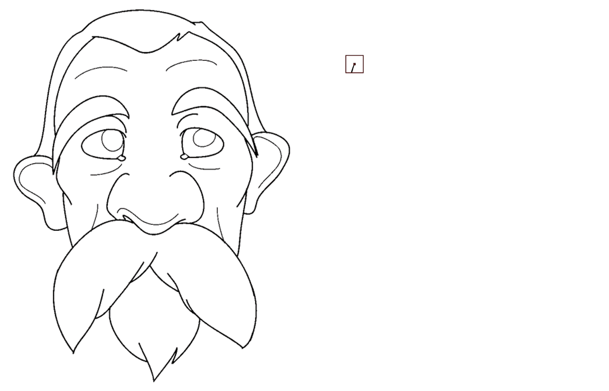 |
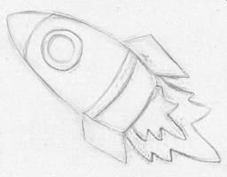
|


|
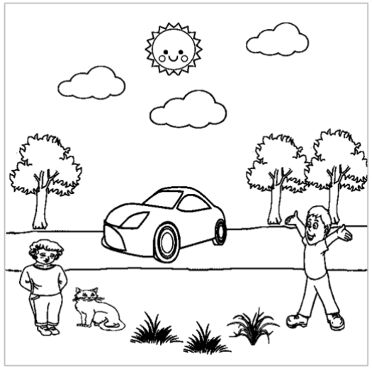 |
平面草图是人们表达自身想法的最简单快捷的方式之一。与彩色自然图像不同，草图图像仅由黑白两色和稀疏线条构成，
因此让计算机去理解草图的内容以及其背后传达的思想是当前一个极具挑战性的问题。
目前实验室专注于使用机器学习和深度学习的方法，
去解决草图的生成（合成）、理解（比如草图的语义理解、实例分割）
及其应用的相关问题（比如草图的自动着色、草图到自然图像的合成等）。
相关链接：
1. 草图合成相关工作整理汇总（https://github.com/MarkMoHR/Awesome-Sketch-Synthesis）
2. 基于草图的应用相关工作整理汇总（https://github.com/MarkMoHR/Awesome-Sketch-Based-Applications）
| 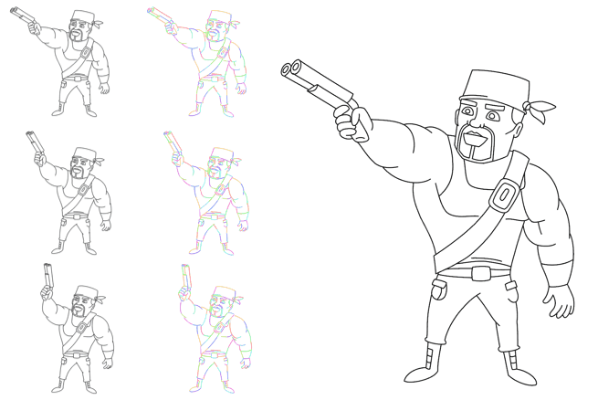 |
Joint Stroke Tracing and Correspondence for 2D Animation
Haoran Mo, Chengying Gao* and Ruomei Wang
|

|
Text-based Vector Sketch Editing with Image Editing Diffusion Prior
Haoran Mo, Xusheng Lin, Chengying Gao* and Ruomei Wang
|
Video-Driven Sketch Animation via Cyclic Reconstruction Mechanism
Zhuo Xie, Haoran Mo and Chengying Gao*
|
|
| 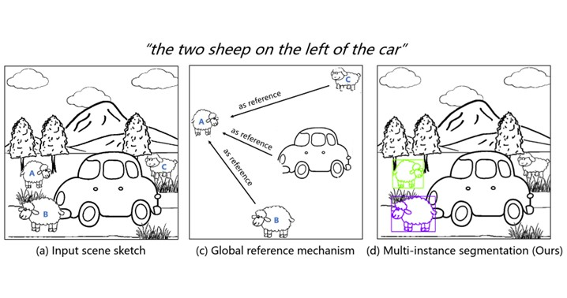 |
Multi-instance Referring Image Segmentation of Scene Sketches based on Global Reference Mechanism
Peng Ling, Haoran Mo and Chengying Gao*
|

|
Line Art Colorization Based on Explicit Region Segmentation
Ruizhi Cao, Haoran Mo and Chengying Gao*
|

|
General Virtual Sketching Framework for Vector Line Art
Haoran Mo, Edgar Simo-Serra, Chengying Gao*, Changqing Zou and Ruomei Wang
|
| 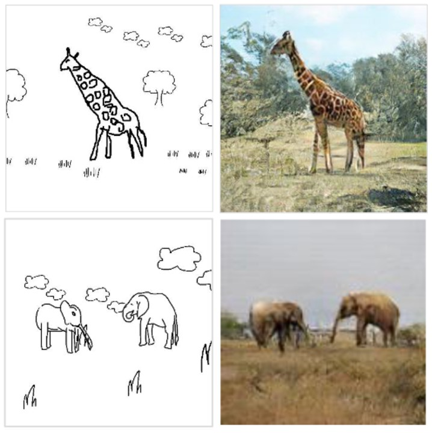 |
SketchyCOCO: Image Generation from Freehand Scene Sketches
Chengying Gao, Qi Liu, Qi Xu, Jianzhuang Liu, Limin Wang, Changqing Zou*
|

|
Language-based Colorization of Scene Sketches
Changqing Zou#, Haoran Mo#(joint first author), Chengying Gao*, Ruofei Du and Hongbo Fu
|

|
SketchyScene: Richly-Annotated Scene Sketches
Changqing Zou#, Qian Yu#, Ruofei Du, Haoran Mo, Yi-Zhe Song, Tao Xiang, Chengying Gao, Baoquan Chen*, and Hao Zhang
|
图像编辑与生成
实验室关注图像修复、颜色复原、颜色迁移和图像非真实感渲染等图像编辑与生成研究方向。
图像修复：指将图像中缺失的部分进行自动补全。 目前实验室专注于使用深度学习的方式提出图像修复算法。
颜色复原：指将灰度图像自动转化为彩色图像。当前颜色复原问题受到很多研究者的关注，因为其应用场景很广， 比如可以将黑白老照片、年代久远的黑白电影转化为带有颜色的影像，使经典作品以更生动的形象展现在我们面前。 目前实验室专注于使用深度学习的方式从大量数据中学习颜色转化的方法。
颜色迁移：指将目标颜色色调迁移到给定的原始图像，同时保持整体图像的合理性。 颜色迁移问题能应用到艺术创作等领域中。 实验室目前专注于使用数字图像处理和数据统计分析的混合方法来解决此问题。
图像非真实感渲染：非真实感渲染旨在利用计算机模拟现实中存在的各种不同艺术形式的绘制风格（铅笔、水彩、卡通、国画和油画等）。 实验室专注于研究结合传统方法与深度学习方法，探索各种不同艺术形式的非真实感渲染算法。 其中，彩铅画是一种特殊形式的非真实感渲染方式，如何准确地表达出彩铅画中独特的色彩特性和纹理效果， 从而使生成出的风格兼顾真实感与美观性，是一个具有较大挑战性的问题。
相关链接：图像上色、颜色复原相关工作整理汇总（https://github.com/MarkMoHR/Awesome-Image-Colorization）
Controllable Anime Image Editing via Probability of Attribute Tags
Zhenghao Song, Haoran Mo, and Chengying Gao*
|
|
| 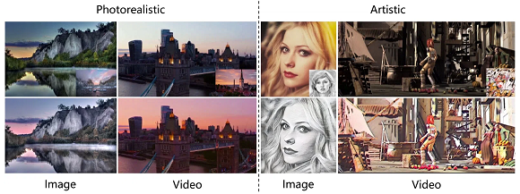 |
CAP-VSTNet: Content Affinity Preserved Versatile Style Transfer
Linfeng Wen, Chengying Gao*, Changqing Zou
|

|
Structural Prior Guided Image Inpainting for Complex Scene
Shuxin Wei, Chengying Gao
|

|
基于稀疏结构的复杂物体修复
高成英，徐仙儿，罗燕媚，王栋
|

|
An edge-refined vectorized deep colorization model for grayscale-to-color images
Zhuo Su, Xiangguo Liang, Jiaming Guo, Chengying Gao, Xiaonan Luo
|
| 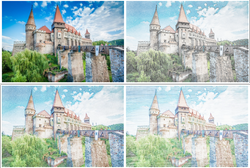 |
PencilArt: A Chromatic Penciling Style Generation Framework
Chengying Gao, Mengyue Tang, Xiangguo Liang, Zhou Su, Changqing Zou
|
三维姿势估计与动作生成
实验室关注三维姿势、手势估计和三维动作生成等研究方向。
DiFusion: Flexible Stylized Motion Generation Using Digest-and-Fusion Scheme Yatian Wang, Haoran Mo, Chengying Gao*
|

|
Unpaired Motion Style Transfer with Motion-oriented Projection Flow Network Yue Huang, Haoran Mo, Xiao Liang, Chengying Gao*
|

|
3D interacting hand pose and shape estimation from a single RGB image Chengying Gao*, Yujia Yang, Wensheng Li
|
服装建模与虚拟试衣
三维服装建模和虚拟试衣在服装制造、影视娱乐和虚拟现实等领域具有广泛的应用，引起了国内外学者的广泛关注。 然而由于服装材料、款式及人体体型的多样性和复杂性等问题，目前仍面临着巨大的挑战。 近年来实验室专注于服装设计过程中的快速建模和2D、3D的虚拟服装展示算法， 并在虚拟试衣和三维服装建模方面取得一些研究成果。

|
Controllable Garment Image Synthesis Integrated with Frequency Domain Features Xinru Liang, Haoran Mo, Chengying Gao*
|
| 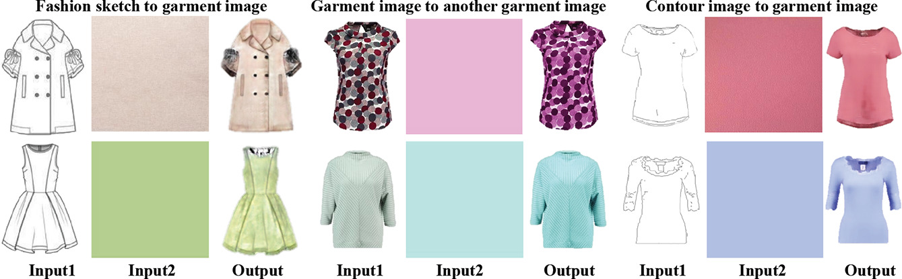 |
FashionGAN: Display your fashion design using Conditional Generative Adversarial Nets Yirui Cui, Qi Liu, Chengying Gao*, Zhuo Su
|
| 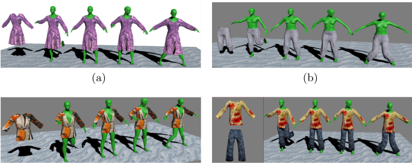 |
Automatic 3D Garment Fitting Based on Skeleton Driving Haozhong Cai, Guangyuan Shi, Chengying Gao*, Dong Wang
|
多媒体处理与三维渲染建模
在多媒体处理处理方面，实验室关注音乐和舞蹈等内容的生成和理解。
在三维渲染与建模方面，实验室关注动态人体建模与神经渲染、基于窄带的快速流体表面重建以及织物建模与渲染等研究方向：
动态人体建模与神经渲染：基于NeRF的动态人体重建任务通常利用输入的视频序列学习人体的神经表达方式，并对人体进行隐式重建。 通过结合体渲染技术，基于输入相机与人体姿势参数生成指定视角与动作的人体渲染图。 尽管目前已有大量工作针对该方向展开研究，但是仍存在训练耗时长、渲染质量低、渲染速度慢等问题。
基于窄带的快速流体表面重建：流体表面网格的重建介于流体模拟和流体渲染之间， 重建出来的流体网格质量与最终渲染效果有着极其密切的关系。 在当前有限的算力前提下，如何在尽可能保证网格质量的同时加快重建效率是一个非常具有挑战性的难题。
织物建模与渲染：织物是虚拟世界中不可或缺的一部分。 基于纤维的纱线几何结构可以极大地还原织物种类的多样性和结构的复杂性，对织物的真实感渲染起着至关重要的作用。 然而纤维带来大量的微观细节，这使得庞大的织物模型只能在动画制作、电影特效等离线渲染领域中得以运用， 而无法满足电子游戏等实时渲染的需求。近年来实验室专注于找到一种高质量、全自动的三角网格模型到纱线模型的转换算法， 进而使用基于微观模型的织物实时渲染算法对纱线模型进行展示，以模拟出织物纤维级别的细节特征。

|
ReGA: Relighting Dynamic Gaussian Avatars from Sparse Views
Lingzhe Zeng, Wensheng Li, Rongbin Zheng, Chengying Gao*
|

|
Feature Replacement in Gaussian Splatting for 3D Stylization
Jinkeng Zhu, Wensheng Li, ChengYing Gao*
|
Efficient Integration of Neural Representations for Dynamic Humans
Wensheng Li, Lingzhe Zeng, Chengying Gao, Ning Liu*
|
|

|
DanceComposer: Dance-to-Music Generation Using a Progressive Conditional Music Generator
Xiao Liang, Wensheng Li, Lifeng Huang and Chengying Gao
|
PianoBART: Symbolic Piano Music Generation and Understanding with Large-Scale Pre-Training
Xiao Liang, Zijian Zhao, Weichao Zeng, Yutong He, Fupeng He, Yiyi Wang and Chengying Gao
|
|

|
A Completely Parallel Surface Reconstruction Method for Particle-Based Fluids
Wencong Yang, Chengying Gao
|
| 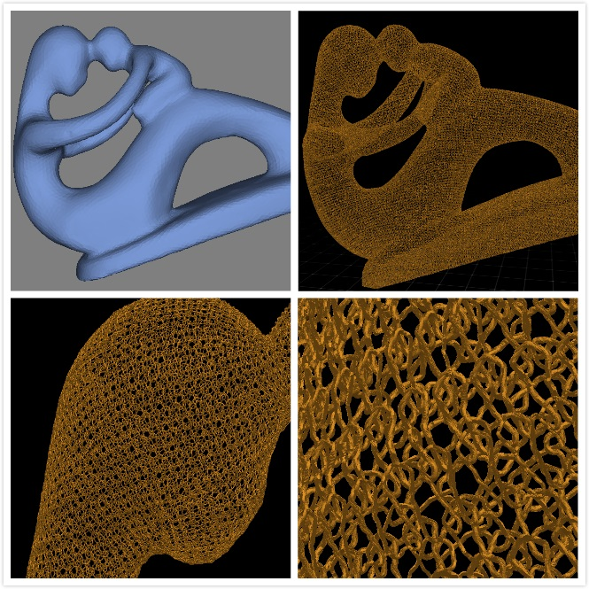 |
全自动的纱线模型生成算法
张泽坤
|
| 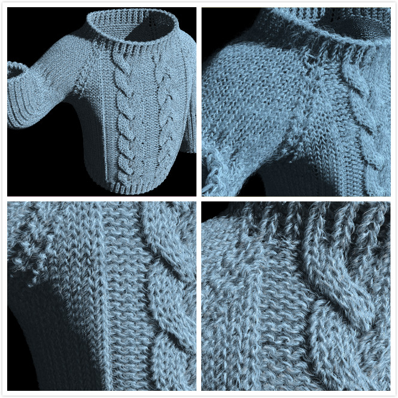 |
基于微观模型的织物实时渲染算法
罗幸荣
|
联系方式
- 联系邮箱: sysuimsl@126.com
- 地址: 中国 广州, 中山大学, 计算机学院, A409室